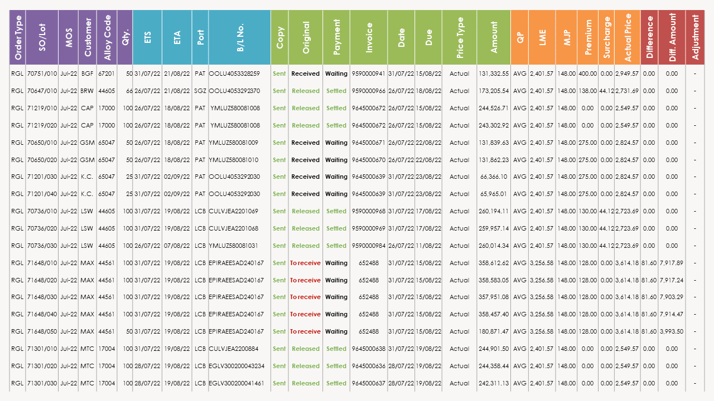
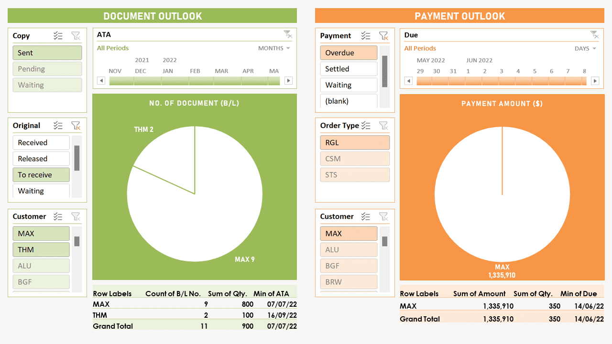

• Small team, large operation — We served as the Thai representative of a Dubai aluminium supplier to 18 factories. Our lean team of 2 managed the end-to-end documentation and payment cycle for over 80 orders monthly.
• No system existed — Every task from calculating per-order prices to sending original B/L had to be executed from scratch. This led to frequent delays and errors, resulting in operational bottlenecks and significant overdue accounts.
• The operational system — I designed and built a multi-sheet Excel workbook covering the full shipment lifecycle, structured around these core principles:
The sheet stores reference data including customer profiles, operational codes, and standardized prices — serving as the primary source for all downstream lookups and validations.
The operational core tracks every lifecycle milestone from order placement to final payment in a unified row — automatically resolving complex pricing variations and layered business conditions.

A unique order number auto-populates all corresponding data into pre-formatted templates — reducing each communication to a simple copy-and-send action.
Pivot-based dashboards monitor real-time operational status and visualize annual summary — turning raw data into strategic insights supporting decisions.

• Efficiency — The system eliminated delays and errors, resolving operational bottlenecks and reducing overdue accounts to just one. Its integrated logic also transformed a multi-tasks process into a one-person operation.
• Acquired value — The project successfully managed the $259M portfolio. The solution proved so effective that the workbook was acquired outlasting my tenure.